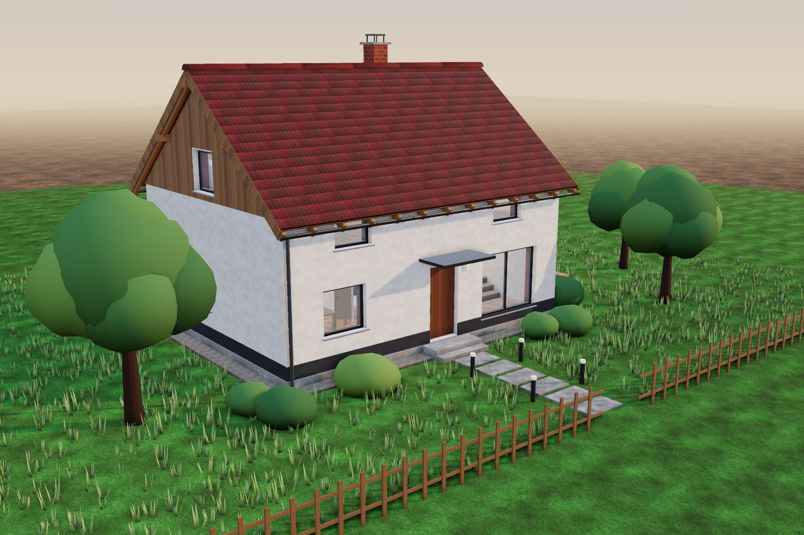
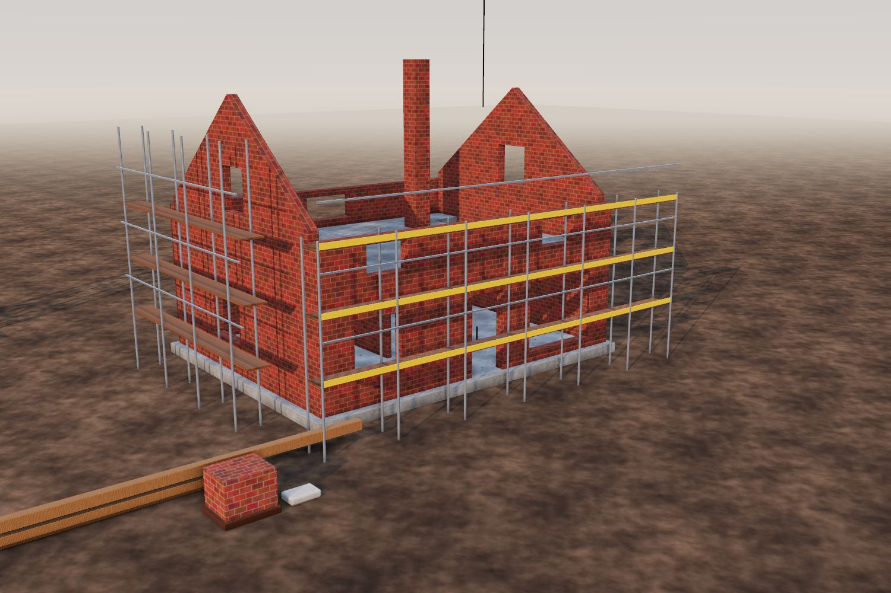

VorherNachher
Alle 7 Gewerke
Neubau Einfamilienhaus «Demohaus»
Vom leeren Bauplatz zum bezugsbereiten Einfamilienhaus mit Satteldach, Holzterrasse und Garten. Das Haus aus unserer Scroll-Geschichte – als 3D-Visualisierung.
- Ort
- Demostadt
- Gewerke
- Rohbau, Fassade, Zimmerei, Elektro, Innenausbau, Schreinerei, Garten
- Bauzeit
- 11 Monate
- Fläche
- 165 m² Wohnfläche